This page highlights my projects as a Computer Engineering student at the University of Utah.
Browse the featured projects below to see examples of my technical work and engineering experience.
The Motor Driver PCB project involved the end-to-end design and implementation of a 6V DC motor control system, combining hardware design, embedded programming, and control theory. A bidirectional H-bridge driver circuit was designed and implemented, followed by the development of a custom PCB using KiCad with attention to signal integrity and layout quality. On the firmware side, a closed-loop PID controller was implemented in C on an STM32 microcontroller, using encoder feedback to regulate motor speed. The system was validated through oscilloscope measurements of switching signals and motor response, ensuring stable and reliable operation under varying conditions.
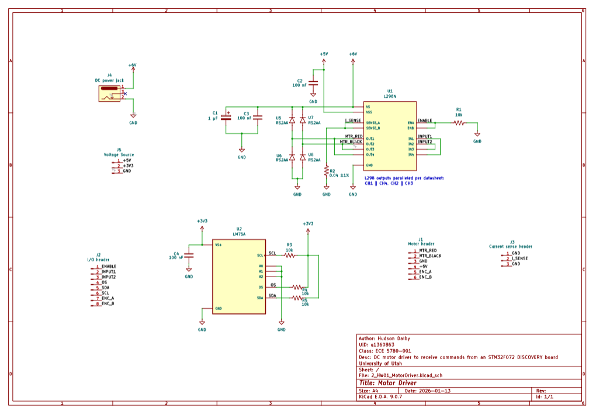
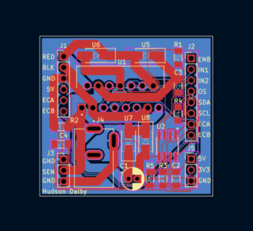
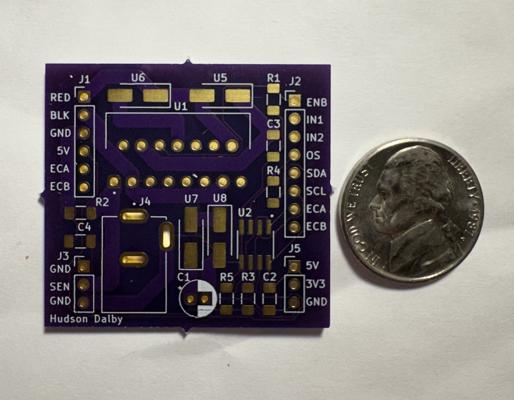
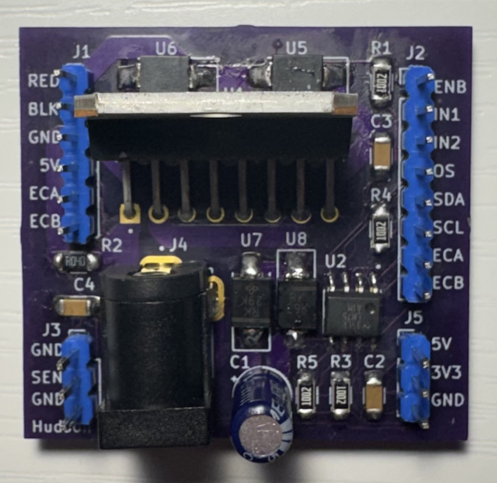
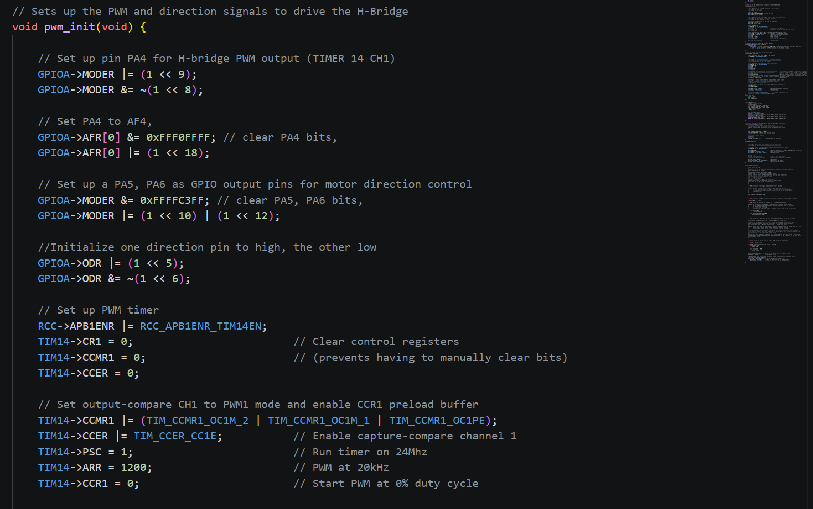
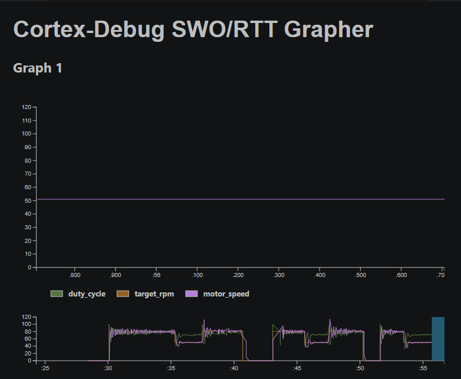
The FPGA Computer project involved co-designing a custom RISC-inspired processor on an Intel FPGA, integrating both hardware and software components into a complete computing system. The CPU was implemented in Verilog, including key architectural components such as the datapath, control unit, ALU, register file, and memory interfaces. A custom instruction set architecture (ISA) and assembler were developed to support program execution, enabling the creation of assembly-level applications. As a demonstration of system capability, a real-time game was implemented, with VGA output for graphics and an external controller interfaced through memory-mapped I/O, showcasing full-stack hardware/software integration.
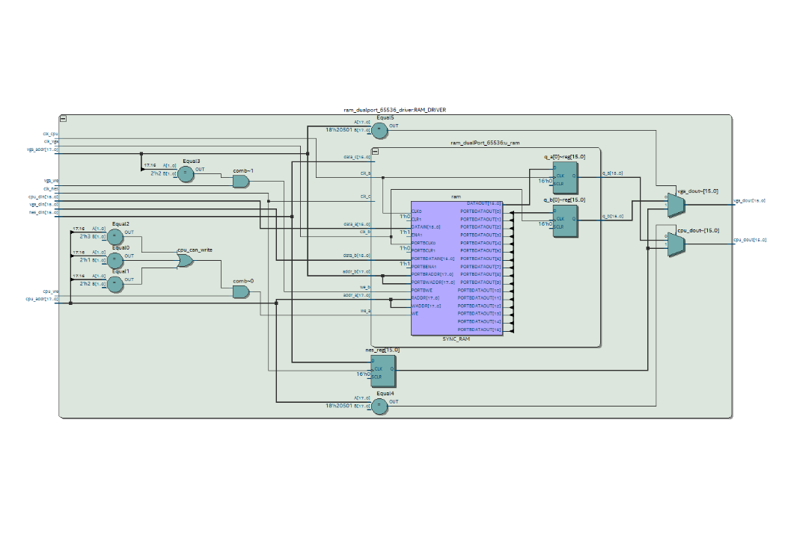
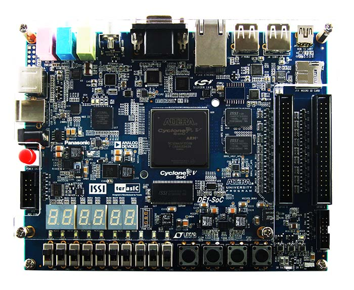
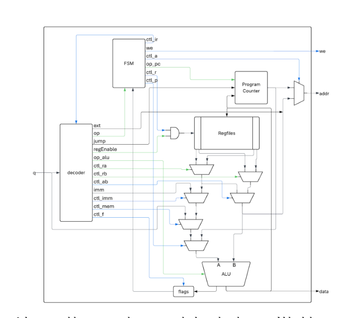
This project focused on extending the xv6 kernel to deepen understanding of low-level operating system functionality. Work spanned the full execution pipeline, including boot-time initialization, ELF-based program loading, and user-space execution. A Unix-like shell with job control was implemented, supporting foreground and background processes along with signal handling for interactive control. Additionally, an ELF loader was developed to correctly map program segments into memory, apply relocations, and transfer execution to the program entry point. The project also involved analyzing and modifying virtual memory setup, including early page table initialization and address space construction.
The PCB Component Detection project focuses on developing a computer vision system to automatically identify and classify electronic components from full printed circuit board images. Using PyTorch, a convolutional neural network–based object detection pipeline is being built to detect components such as resistors, capacitors, and integrated circuits with bounding box predictions. The project includes constructing a labeled dataset from multiple PCB image sources, designing training and evaluation workflows, and analyzing model performance using standard detection metrics. Current work emphasizes improving detection accuracy while exploring efficient model architectures suitable for deployment under parameter and resource constraints.
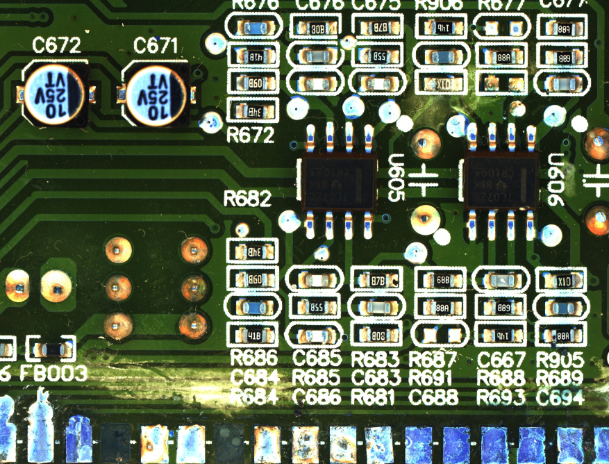
The Heartbeat Sensor & Visualizer project involves the design of a complete embedded sensing system for real-time heart rate monitoring using photoplethysmography (PPG). A custom analog front-end was developed using an LED and photodiode, incorporating filtering and amplification stages to extract a usable pulse signal. This signal is sampled using the ADC of an STM32 microcontroller, where embedded C code processes the data for heartbeat detection. A custom PCB is being developed to integrate the sensing and signal conditioning circuitry, and current work focuses on refining signal processing algorithms and implementing real-time visualization and BPM estimation. The project combines analog design, embedded systems, and hardware/software integration into a cohesive sensing platform.
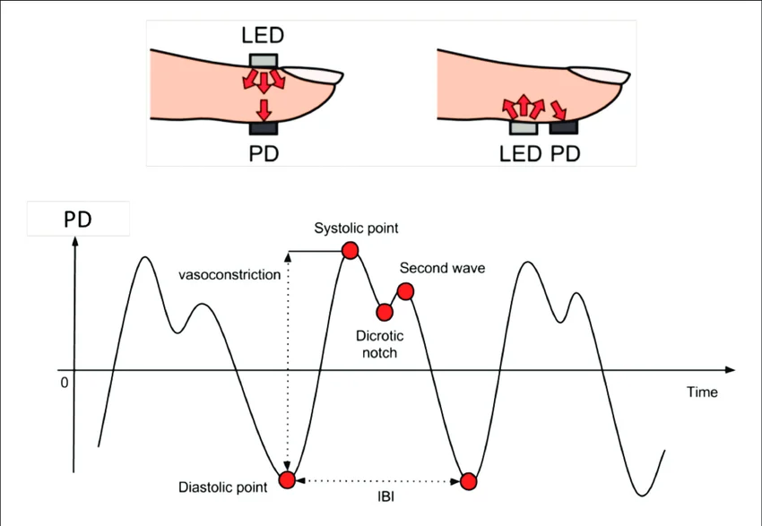
An extended Github portfolio with more projects and details available upon request. Feel free to reach out if you'd like to see more of my work or discuss any of the projects in detail!
I'm Hudson Dalby, a Computer Engineering student at the University of Utah, pursuing a combined bachelor's and master's degree with a focus on deep learning, embedded systems, and artificial intelligence. I'm interested in the intersection of embedded systmes and machine learning, and am passionate about building intelligent systems that can operate in real-world environments. Outside of engineering, I enjoy spending time outdoors, staying active, and competing in races and triathlons.
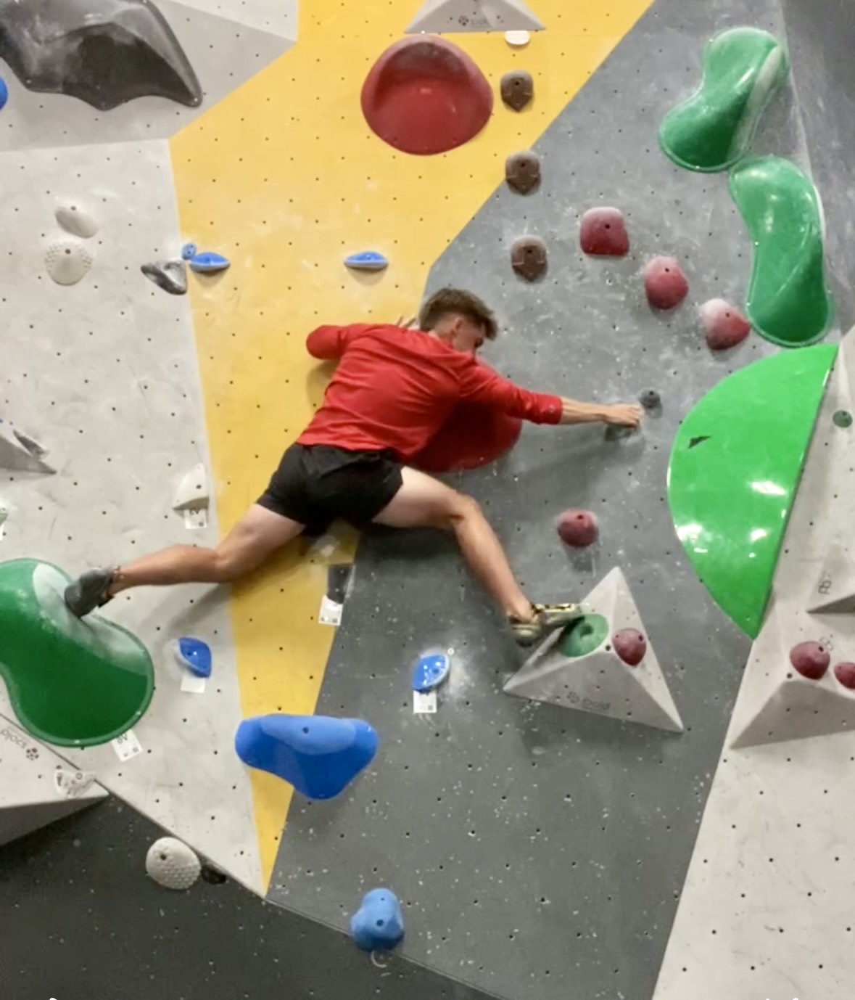
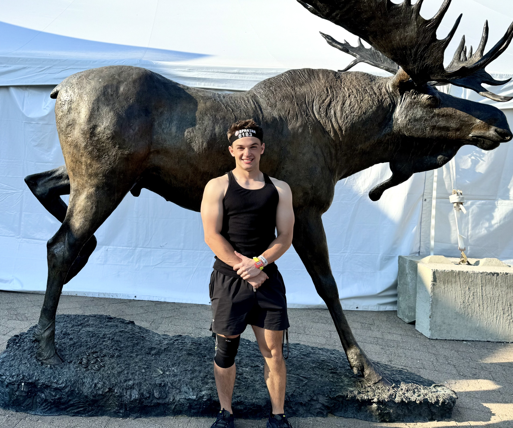
Let’s connect—feel free to download my Resume or reach out on LinkedIn.